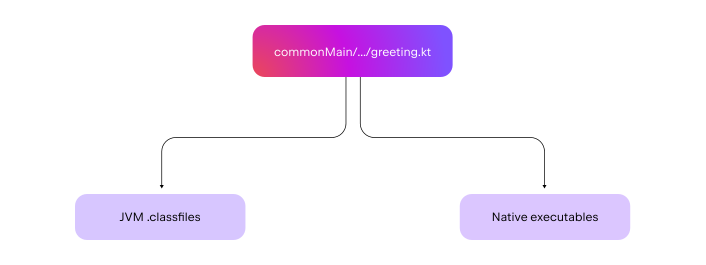
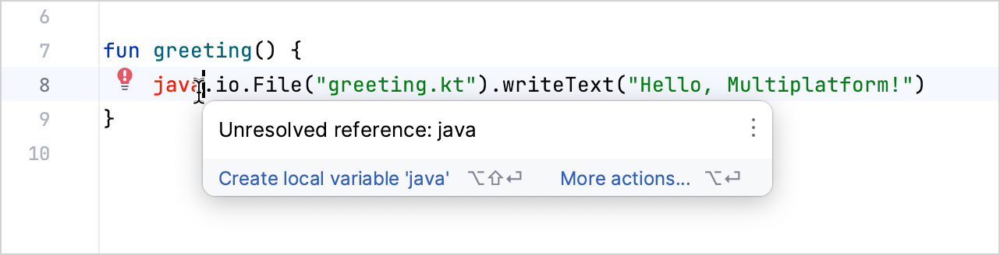
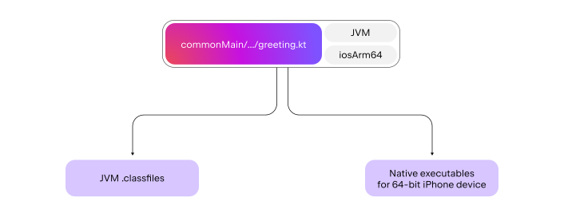
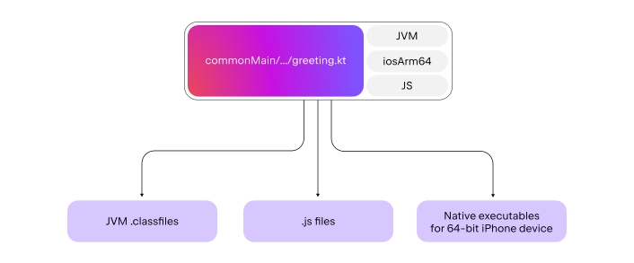
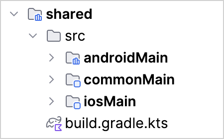
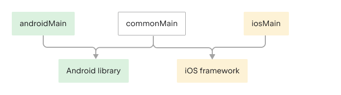
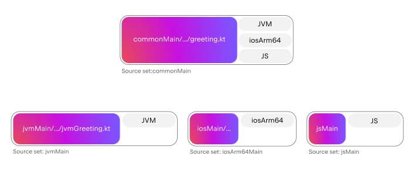
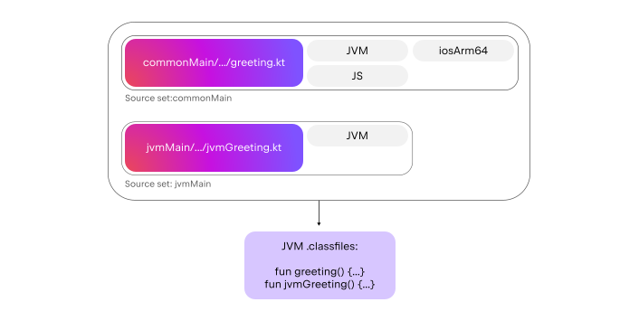
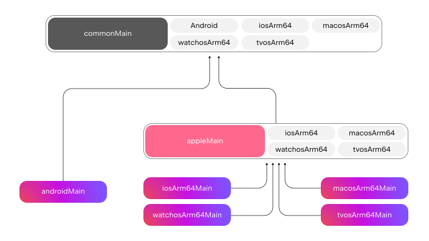
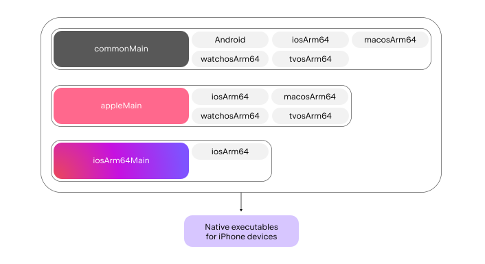

借助 Kotlin Multiplatform，你可以在不同平台之间共享代码。本文介绍共享代码受到的限制、如何区分共享部分与平台专用部分，以及如何指定共享代码适用的平台。
你还将了解配置 Kotlin Multiplatform 项目的核心概念，包括通用代码、目标、平台专用源集、中间源集和测试集成。这些知识将帮助你在今后配置多平台项目。
本文展示的模型比 Kotlin 实际使用的模型更简化，但这个基础模型应该足以应对大多数情况。
通用代码
通用代码就是在不同平台之间共享的 Kotlin 代码。
先看一个简单的“Hello, World”示例：
fun greeting() {
println("Hello, Kotlin Multiplatform!")
}
跨平台共享的 Kotlin 代码通常放在 commonMain 目录中。代码文件的位置很重要，因为它会影响这些代码要编译到哪些平台。
Kotlin 编译器以源码作为输入，生成一组面向特定平台的二进制产物。编译多平台项目时，同一份代码可以生成多种二进制产物。例如，同一个 Kotlin 文件既可以生成 JVM .class 文件，也可以生成原生可执行文件：

并非每段 Kotlin 代码都能编译到所有平台。如果通用代码使用了无法编译到其他平台的函数或类，Kotlin 编译器会阻止这种用法。
例如，通用代码不能使用 java.io.File 这一依赖。它属于 JDK，而通用代码也会编译为原生代码，在那里无法使用 JDK 类：

通用代码可以使用 Kotlin Multiplatform 库。这些库提供统一的 API，并可在不同平台上采用不同实现。平台专用 API 则属于额外提供的部分；如果试图在通用代码中使用这类 API，就会报错。
例如，kotlinx.coroutines 是支持所有目标的 Kotlin Multiplatform 库，但也包含平台专用部分，用于把 kotlinx.coroutines 的并发原语转换为 JDK 并发原语，例如 fun CoroutinesDispatcher.asExecutor(): Executor。这部分额外 API 在 commonMain 中不可用。
要查找可用的 Kotlin Multiplatform 库，请访问 klibs.io。
目标
目标（target）指定 Kotlin 将通用代码编译到哪些平台，例如 JVM、JS、Android、iOS 或 Linux。前面的示例将通用代码编译到了 JVM 和原生目标。
Kotlin 目标是描述编译目的平台的标识，它决定生成的二进制格式、可用的语言结构，以及允许使用的依赖。
首先需要声明目标，告诉 Kotlin 为哪个具体目标编译代码。在 Gradle 中，通过 kotlin {} 块内预定义的 DSL 调用来声明目标：
kotlin {
jvm() // Declares a JVM target
iosArm64() // Declares a target that corresponds to 64-bit iPhones
}
每个多平台项目由此定义自己支持的一组目标。要进一步了解如何在构建脚本中声明目标，请参阅分层项目结构。
声明 jvm 和 iosArm64 目标后，commonMain 中的通用代码就会被编译到这两个目标：

要理解哪些代码会编译到某个目标，可以把目标想象成贴在 Kotlin 源文件上的标签。Kotlin 根据这些标签决定如何编译代码、生成哪些二进制产物，以及代码中可以使用哪些语言结构和依赖。
如果还希望把 greeting.kt 文件编译为 .js，只需再声明 JS 目标。这样，commonMain 中的代码就会多一个与 JS 目标对应的 js 标签，告诉 Kotlin 生成 .js 文件：

Kotlin 编译器就是这样处理需要编译到所有已声明目标的通用代码的。有关如何编写平台专用代码，请参阅源集。
源集
Gradle 源集（source set）是一组源文件，具有自己的目标、依赖和编译器选项。它是多平台项目共享代码的主要方式。
多平台项目中的每个源集都具有以下特点：
具有一个在当前项目中唯一的名称。
包含一组源文件和资源，通常存放在与源集同名的目录中。
指定其中的代码要编译到哪些目标。这些目标决定该源集中可用的语言结构和依赖。
定义自己的依赖和编译器选项。
Kotlin Multiplatform 提供了多个预定义源集，其中之一就是 commonMain。所有多平台项目都有这个源集，它会编译到所有已声明的目标。
在 Kotlin Multiplatform 项目中，你通常通过 src 下的目录来使用源集。例如，一个包含 commonMain、iosMain 和 androidMain 源集的 shared 模块具有以下结构：

将共享模块构建为 Android 库时，通用 Kotlin 代码按 Kotlin/JVM 处理；将其构建为 iOS framework 时，通用 Kotlin 代码按 Kotlin/Native 处理：

在 Gradle 脚本中，通过 kotlin.sourceSets {} 块中的名称访问源集：
kotlin {
// Targets declaration:
// …
// Source set declaration:
sourceSets {
commonMain {
// Configure the commonMain source set
}
}
}
除了 commonMain，其他源集可以是平台专用源集，也可以是中间源集。
平台专用源集
只编写通用代码虽然方便，但并非总能做到。commonMain 中的代码会编译到所有已声明的目标，因此 Kotlin 不允许你在其中使用平台专用 API。
在同时具有原生目标和 JS 目标的多平台项目中，以下 commonMain 代码无法通过编译：
// commonMain/kotlin/common.kt
// Doesn't compile in common code
fun greeting() {
java.io.File("greeting.txt").writeText("Hello, Multiplatform!")
}
为解决这一问题，Kotlin 会创建平台专用源集，也称平台源集。每个目标都有一个对应的平台源集，只编译到该目标。例如，jvm 目标对应的 jvmMain 源集只编译到 JVM。Kotlin 允许在这类源集中使用平台专用依赖，例如在 jvmMain 中使用 JDK：
// jvmMain/kotlin/jvm.kt
// You can use Java dependencies in the `jvmMain` source set
fun jvmGreeting() {
java.io.File("greeting.txt").writeText("Hello, Multiplatform!")
}
编译到特定目标
编译到某个具体目标时，会涉及多个源集。Kotlin 将多平台项目编译到该目标时，会收集所有带有这个目标标签的源集，并据此生成二进制产物。
以具有 jvm、iosArm64 和 js 目标的项目为例。Kotlin 会为通用代码创建 commonMain 源集，并为各个目标创建对应的 jvmMain、iosArm64Main 和 jsMain 源集：

编译到 JVM 时，Kotlin 会选择所有带有“JVM”标签的源集，即 jvmMain 和 commonMain，然后将它们一起编译为 JVM class 文件：

由于 Kotlin 会将 commonMain 和 jvmMain 一起编译，生成的二进制产物同时包含 commonMain 和 jvmMain 中的声明。
使用多平台项目时，请记住：
要让 Kotlin 将代码编译到某个平台，需要声明对应的目标。
选择将代码保存在哪个目录或源文件之前，先确定需要在哪些目标之间共享这些代码：
如果代码需要在所有目标之间共享，就应在
commonMain中声明。如果代码只用于一个目标，就应定义在该目标的平台专用源集中，例如 JVM 对应的
jvmMain。
平台专用源集中的代码可以访问通用源集中的声明。例如，
jvmMain中的代码可以使用commonMain中的代码。反过来则不行：commonMain不能使用jvmMain中的代码。平台专用源集中的代码可以使用相应平台的依赖。例如，
jvmMain中的代码可以使用仅适用于 Java 的库，如 Guava 或 Spring。
中间源集
简单的多平台项目通常只有通用代码和平台专用代码。commonMain 源集表示所有已声明目标之间共享的通用代码；jvmMain 等平台专用源集表示只编译到对应目标的平台专用代码。
在实际项目中，通常需要更细致地划分代码共享范围。
例如，你需要支持所有现代 Apple 设备和 Android 设备：
kotlin {
android()
iosArm64() // 64-bit iPhone devices
macosArm64() // Modern Apple Silicon-based Macs
watchosArm64() // Modern 64-bit Apple Watch devices
tvosArm64() // Modern Apple TV devices
}
同时，你需要在某个源集中添加一个为所有 Apple 设备生成 UUID 的函数：
import platform.Foundation.NSUUID
fun randomUuidString(): String {
// You want to access Apple-specific APIs
return NSUUID().UUIDString()
}
不能把这个函数添加到 commonMain。因为 commonMain 会编译到所有已声明目标，包括 Android，而 platform.Foundation.NSUUID 是 Apple 专用 API，在 Android 上不可用。如果在 commonMain 中引用 NSUUID，Kotlin 就会报错。
可以把这段代码分别复制到各个 Apple 平台专用源集：iosArm64Main、macosArm64Main、watchosArm64Main 和 tvosArm64Main。但不建议这样做，因为这类重复代码容易出错。
中间源集可以解决这个问题。中间源集是一种 Kotlin 源集，会编译到项目中的部分目标，而不是全部目标。它也被称为分层源集，或简称为层级。
Kotlin 默认会创建一些中间源集。在这个例子中，最终的项目结构如下：

图中底部的多色块表示平台专用源集。为使图示清晰，这里省略了目标标签。
appleMain 块是 Kotlin 创建的中间源集，用于共享需要编译到 Apple 目标的代码。appleMain 只会编译到 Apple 目标，因此 Kotlin 允许在 appleMain 中使用 Apple 专用 API，你可以将 randomUUID() 函数添加到这里。
编译到某个具体目标时，Kotlin 会获取所有带有该目标标签的源集，包括中间源集。因此，编译到 iosArm64 平台目标时，会将 commonMain、appleMain 和 iosArm64Main 源集中的所有代码一起编译：

Apple 真机目标与模拟器目标
使用 Kotlin Multiplatform 开发 iOS 移动应用时，通常会使用 iosMain 源集。你可能以为它是 ios 目标的平台专用源集，但实际上并不存在单一的 ios 目标。大多数移动项目至少需要两个目标：
真机目标用于生成可在 iOS 设备上执行的二进制产物。目前，iOS 只有一个真机目标：
iosArm64。模拟器目标用于生成可在本机启动的 iOS 模拟器中执行的二进制产物。如果使用 Apple 芯片的 Mac，请选择
iosSimulatorArm64作为模拟器目标。
如果只声明 iosArm64 真机目标，就无法在本机运行和调试应用及测试。
由于 iOS 真机和模拟器使用的 Kotlin 代码通常相同，iosArm64Main 和 iosSimulatorArm64Main 等平台专用源集通常是空的。你可以只使用 iosMain 中间源集，在这些目标之间共享代码。
其他非 Mac 的 Apple 目标也遵循同样的方式。例如，如果有 Apple TV 的 tvosArm64 真机目标，以及在 Apple 芯片设备上运行 Apple TV 模拟器的 tvosSimulatorArm64 目标，就可以使用 tvosMain 中间源集为它们共享代码。
集成测试
实际项目除了主要的生产代码，还需要测试。因此，默认创建的源集名称都带有 Main 或 Test 后缀。Main 包含生产代码，Test 包含这些代码的测试。两者的关联会自动建立，无需额外配置，测试就能使用 Main 代码提供的 API。
与 Main 对应的 Test 也同样是源集。例如，commonTest 对应 commonMain，会编译到所有已声明的目标，方便你编写通用测试。jvmTest 等平台专用测试源集则用于编写平台专用测试，例如 JVM 专用测试，或需要使用 JVM API 的测试。
除了用于编写通用测试的源集，你还需要一个多平台测试框架。Kotlin 默认提供 kotlin.test 库，其中包含 @kotlin.Test 注解，以及 assertEquals、assertTrue 等多种断言方法。
你可以在各平台对应的源集中，像编写普通平台测试一样编写平台专用测试。与主要代码类似，每个源集都可以使用平台专用依赖，例如 JVM 的 JUnit 和 iOS 的 XCTest。要运行某个目标的测试，请使用 <targetName>Test 任务。
有关如何创建和运行多平台测试，请参阅测试多平台应用教程。